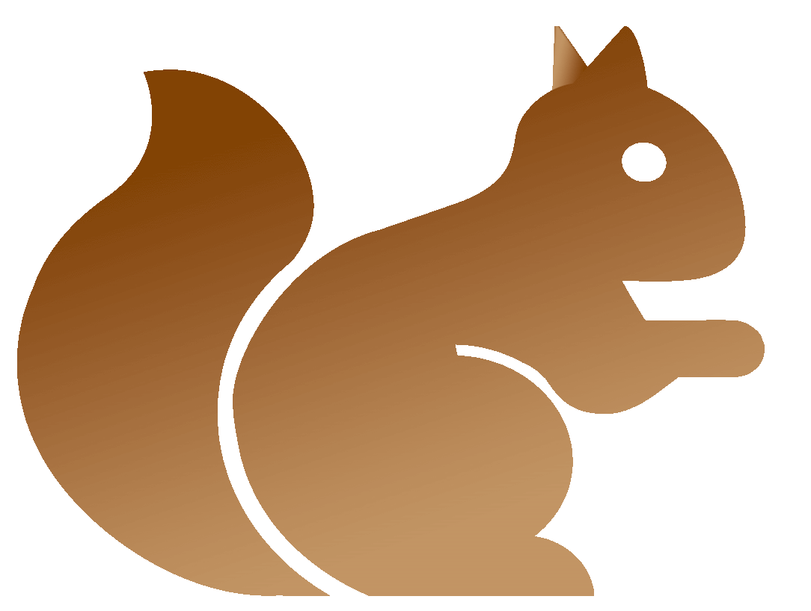
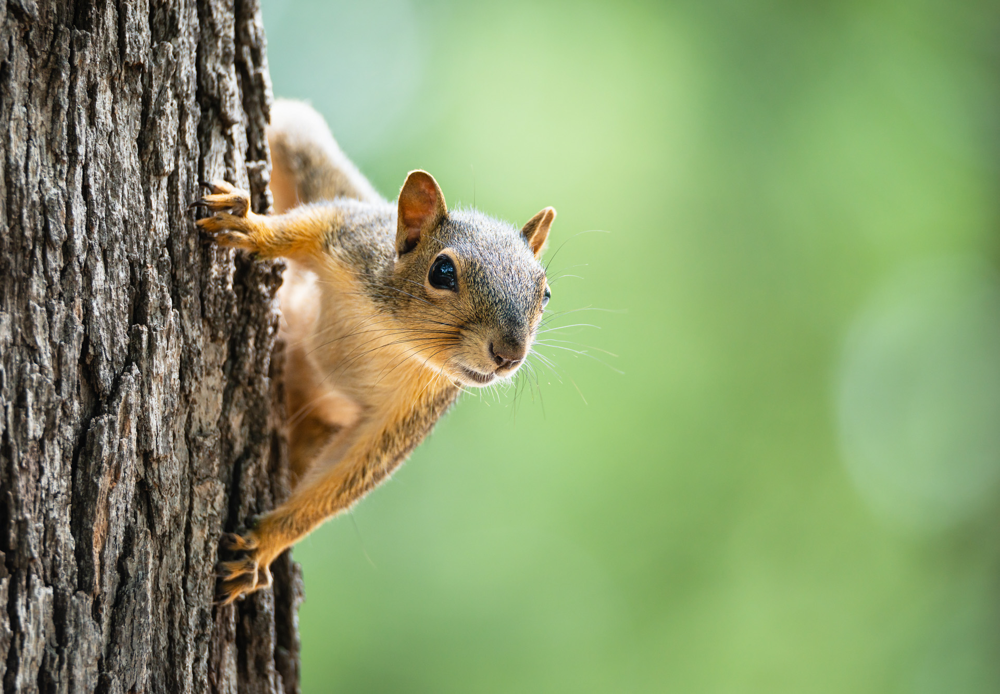
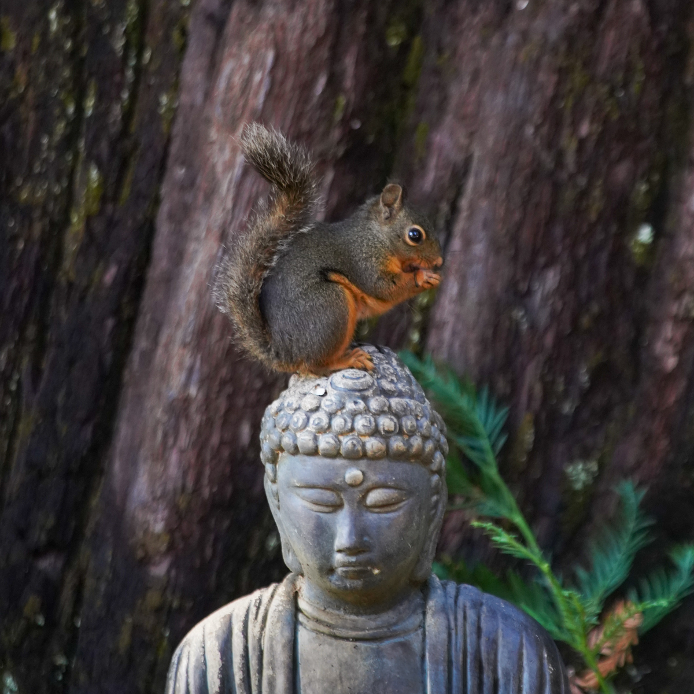
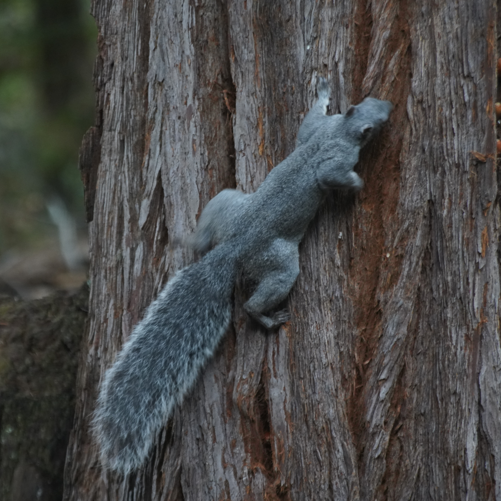
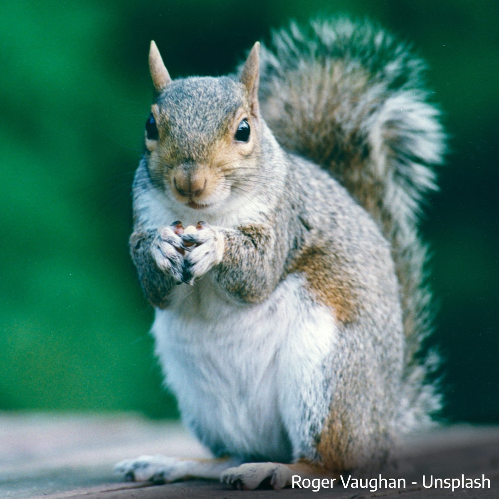
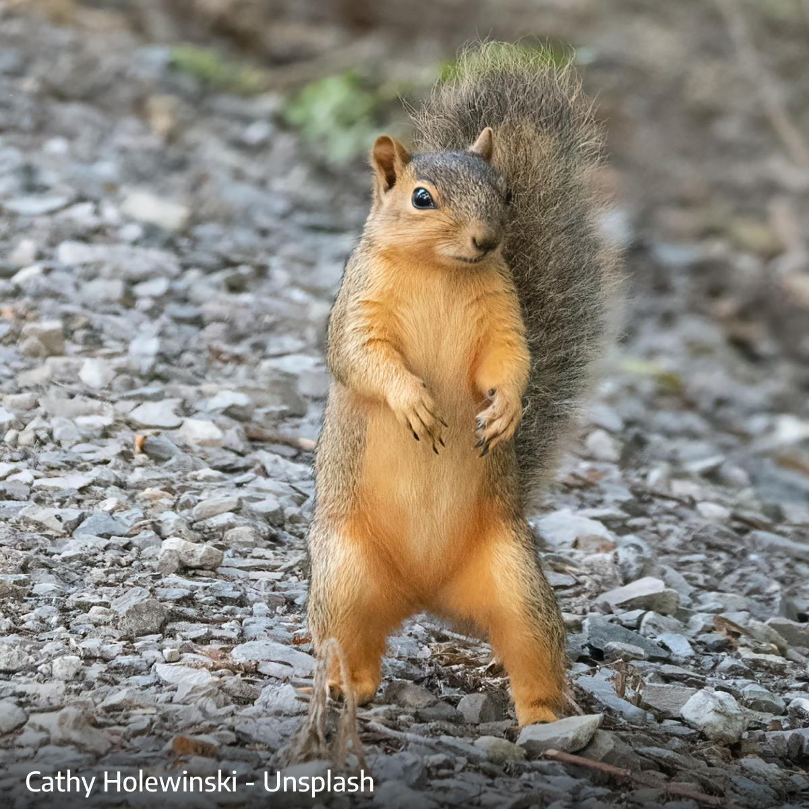
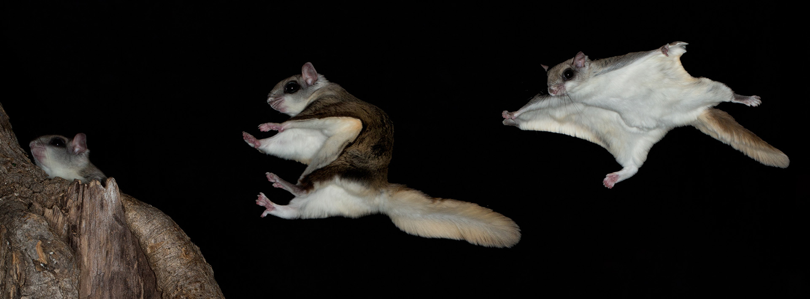

Tree Squirrels of California

Welcome Squirrel Friends and Foes!
Everyone knows a squirrel, whether you’ve spotted one on a park bench, running along a power line, or at your backyard birdfeeder.
In California, there are currently four types of tree squirrels, but this was not always the case. Only two tree squirrel species are truly native:
🐿️ Western Gray Squirrel (Sciurus griseus)
🐿️ Douglas Squirrel (Tamiasciurus douglasii)
Unless you live in or at the edge of a forest, you’re most likely seeing a non-native, such as the sleek Eastern Gray or the bold, orange-toned Fox squirrel.

Protecting California’s Native Tree Squirrels
This website is dedicated to:
- Helping you identify California’s four primary tree squirrel species
- Explaining the difference between native and introduced squirrels
- Offering practical tips for peaceful coexistence
- Providing up-to-date information on laws, habitats, and squirrel science
- Celebrating the incredible adaptations and personalities of both the Western Gray and the Douglas Squirrel
Most Californians are familiar with the bushy-tailed squirrels in their backyards and parks.
But the truth is, the majority of those aren’t Western Grays. They’re Fox Squirrels or Eastern Gray Squirrels, and both are non-native species introduced by people.
They’ve adapted to city life. They’re bold, prolific, and disruptive.
The Western Gray, in contrast, is shy. It lives in oak and pine forests, avoiding people and suburbs.
It needs a continuous canopy to thrive. As a result, it’s disappearing from parts of its native range.
The Douglas Squirrel, California’s smallest tree squirrel, is even more elusive.
It lives only in conifer forests and plays an important role in seed dispersal and forest health.
Its chattering call is part of the natural soundtrack of California’s wilderness.
But its story is rarely told.
Native vs. Introduced?
The location of your squirrel is one of your best clues.
You are unlikely to see a native squirrel inspecting your garbage cans or roaming through a city park.
Native squirrels keep to the wild.
The native squirrels of California need broad areas of trees with connected canopies.
Unless you live in or at the edge of a healthy forest or oak savannah, there’s a good chance your squirrel is one that was introduced.
Squirrel Size Comparison
One clue for identifying your squirrel is its size:
- Douglas Squirrel: ~13 inches
- Eastern Gray Squirrel: ~20 inches
- Western Gray Squirrel: ~23 inches
- Fox Squirrel: ~26 inches
Squirrel Identification
Douglas Squirrel - native -

The Douglas squirrel is small, with reddish-brown fur and a rich chestnut belly in summer, changing to a pale cream color in winter. It lives in conifer forests and does not inhabit suburban areas.
Western Gray - native -

The Western Gray is a large, elegant squirrel with steel gray fur, a white belly, and an extraordinarily lush tail. Its tail is wide, feathery, and used for balance, warmth, and protection.
Eastern Gray - introduced -

Variable in color with gray and brown tones or even black, the Eastern Gray is adaptable and prolific. It lives in cities and suburbs and competes with native species for habitat and food.
Fox Squirrel - introduced -

The largest squirrel in California, with a consistent chestnut color. They were introduced in parks and have spread into suburban areas, often mistaken for native species.
Tree Squirrels vs. Ground Squirrels

- Nesting: Tree squirrels build nests in trees (dreys or cavities). Ground squirrels dig burrows in the ground.
- Escape behavior: Tree squirrels flee upward into trees or tall structures. Ground squirrels retreat underground.
- Vocalization: Ground squirrels emit a high-pitched shriek when alarmed. Tree squirrels typically vocalize *after* reaching safety.
- Cheek pouches: Ground squirrels have cheek pouches for carrying food. Tree squirrels do not.
- Markings: Ground squirrels often have spots or stripes. Tree squirrels have solid-colored coats with some variation by species.
- Tail and shape: Ground squirrels have thinner, less bushy tails and more pear-shaped bodies. Tree squirrels are leaner with full, fluffy tails.
- Climbing: Ground squirrels can climb trees but are less agile. Tree squirrels are expert climbers and rarely descend to ground level unless necessary.
- Most common ground squirrel in California: The Beechey Ground Squirrel (Otospermophilus beecheyi), named after naturalist Frederick Beechey.
Flying Squirrels?

Flying Squirrels are not classified as Tree Squirrels
In fact, the Groundhog or Marmot is more closely related to a tree squirrel than is a flying squirrel.
- Taxonomic separation: Flying squirrels belong to their own subfamily (Pteromyinae), making them more distantly related to tree squirrels than ground squirrels, chipmunks or marmots.
- Nocturnal lifestyle: They are active at night, unlike tree squirrels, which are diurnal.
- Slow on the ground: Flying squirrels cannot run fast to evade predators—they depend on climbing and gliding to escape.
- Vulnerable when foraging: They forage on the ground at night and are most at risk from nocturnal predators like owls.
- Main predators: Owls are their primary threat, but martens, raccoons, coyotes, and cats also prey on them.
- Flattened tail used for steering: Their tail is broad and flat, acting like a rudder to help steer during glides.
- Fungus-heavy diet: They eat mostly fungi and lichens, with seeds (including conifer seeds) making up around 20% of their diet.